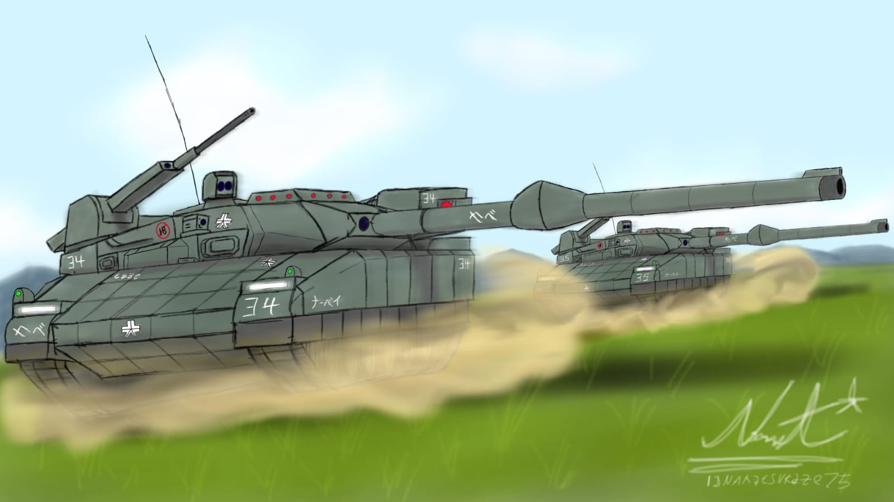

Keberhasilan Java control operations 1 membuat kekuasan milisi FNPI makin membesar dan menguat
Keberhasilan dalam operasi battle of bandung dan siege of bandung membuat moral milisi makin kuat.
Sebanyak 75.000 pasukan indoms menjadi korban dan sebagian Alusista di ambil oleh milisi FNPI buat di pakai dan di kembangkan.
Walaupun berhasil tetapi wilayah tersebut mengalami kerusakan besar di tandai oleh titik merah dan oran sebagai kerusakan ringan.
Sebanyak 15.000 pasukan indoms mulai menyerah dan jenderal indoms mulai berkhianat dan pindah ke indoms.

Angkatan laut Indoms siap serang milisi FNPI

Tank baru milik angkatan darat Narvey Type-80NSFW Shuruki

Jenderal besar Grosser Zafkiel : "Kami siap bantu FNPI perang melawan Indoms"

Dilaporkan ditembak jatuh, ini keadaan kapal luar angkasa Asuka saat ini
Trending
- Tank baru Narvey Type-80NSFW Shuruki
- Jenderal besar Grosser Zafkiel : "Kami siap bantu FNPI memenangkan perang melawan Indoms
- Angkatan laut Indoms siap serang milisi FNPI
- Dilaporkan ditembak jatuh, ini keadaan kapal luar angkasa Asuka saat ini